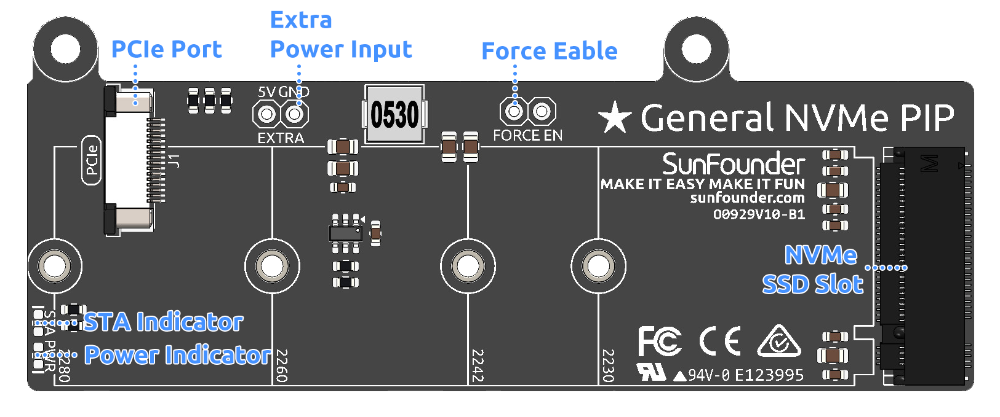

Note
您好，欢迎加入 SunFounder 的 Raspberry Pi、Arduino 和 ESP32 爱好者 Facebook 社区！与志同道合的朋友一起深入探索 Raspberry Pi、Arduino 和 ESP32 的无限可能。
为什么加入？
专家支持：在社区和官方团队的帮助下解决售后问题和技术难题。
学习与分享：交流技巧和教程，提升技能。
独家预览：抢先了解新产品发布和独家预览内容。
专属折扣：享受我们最新产品的专属优惠。
节日促销与抽奖：参与节日特别活动和抽奖。
👉 准备好一起探索与创造了吗？点击 [here] 立即加入！
通用 NVMe PIP 模块（General NVMe PIP）
General NVMe PIP 可让您通过 Raspberry Pi 5 的 PCIe 接口连接一块 M.2 NVMe SSD。
此 NVMe 套件集成了 PCIe Gen 2 交换芯片，具备一个 M-Key M.2 PCIe 插槽，支持 2230、2242、2260 和 2280 尺寸的 NVMe Gen2 SSD 或 AI 加速器。
这款紧凑的模块体积仅比 SSD 略大，既可安装在 Raspberry Pi 顶部，也可侧向安装，占用空间极小，并兼容主动散热器的安装。
Note
搭配 Dual NVMe Raft 或 General NVMe PIP 使用时，建议为 Raspberry Pi 5 配备官方 27W 电源，以确保稳定且充足的供电。使用非官方或功率不足的电源适配器可能导致 SSD 无法正常工作。
Warning
请勿热插拔 NVMe SSD，否则可能会损坏您的设备。
产品特性
单通道 PCIe 2.0 接口，最高传输速率可达 500 MB/s
支持使用 M-Key 接口的 M.2 NVMe SSD，兼容 2230、2242、2260 和 2280 尺寸
可为所连接的 M.2 设备提供最高 3A 电流输出
由于 Raspberry Pi 的 PCIe 接口仅提供 1A（5W），若设备功耗较高（可达 10W），建议使用外部 5V 电源
可安装在 Raspberry Pi 顶部或侧面，完全兼容主动散热器
附带两条定制 FPC 排线，支持灵活安装方式
配备两个状态指示灯：STA 指示设备活动状态，PWR 显示供电状态
硬件总览
PCIe 接口：通过 FPC 排线连接 Raspberry Pi，用于传输 PCIe 信号。
外部电源输入：当 NVMe SSD 所需电流超过 Pi 所提供的电流时，可使用外部 5V 电源供电。
电源指示灯（PWR）：显示是否正常供电；若不亮请检查排线或外接电源。
强制供电跳线（Force Enable）：可在系统未提供电源使能信号时强制开启 3.3V 电源。
NVMe SSD 插槽：支持 M-Key 接口的 M.2 NVMe SSD，兼容 2230、2242、2260 和 2280 尺寸。
状态指示灯(STA)：指示 NVMe SSD 的数据传输或设备活动状态，活动时会闪烁。
组装说明